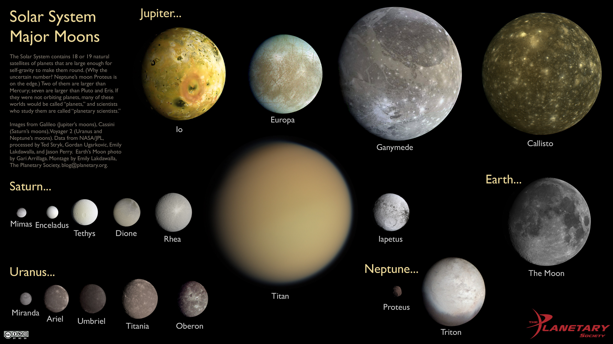
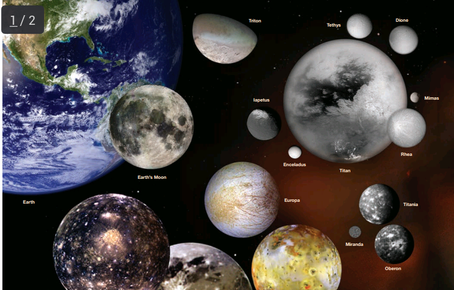

DEVELOPED BY ROBERT ZULU THE PROFESSIONAL PROGRAMMER
MOONS OF THE SOLAR SYSTEM
 Moons — also called satellites — come in many shapes, sizes, and types. They are generally solid bodies, and few have atmospheres. Most of the planetary moons probably formed from the discs of gas and dust circulating around planets in the early solar system. Some moons are large enough for their gravity to cause them to be spherical, while smaller moons appear to be captured asteroids, not related to the formation and evolution of the body they orbit
Earth's Moon is an astronomical body that orbits the planet and acts as its only permanent natural satellite. It is the fifth-largest satellite in the Solar System, and the largest among planetary satellites relative to the size of the planet that it orbits (its primary). The Moon is, after Jupiter's satellite lo, the second-densest satellite in the Solar System among those densesties are know.
The Moon is in synchronous rotation with Earth, and thus always shows the same side to Earth, the near side. Thenear side is marked by volcanic maria that fill the spaces between the bright ancient crustal highlands and the prominent impact craters.
After the Sun, the Moon is the second-brightest regularly visible celestial object in
Earth's sky.
Its surface is actually dark, although compared to the
night sky it appears very bright, with a reflectance just slightly higher than
of worn asphalt.
Its gravitational influence producesocean tides, body tides, and the slight lengthening of the day.
The Moon's average orbital distance is 384,402 km (238,856 mi),
or 1.28 light-seconds. This is about thirty times the diameter of Earth.
The Moon's apparent size in the sky is almost the same as that of the Sun,
since the star is about 400 times the lunar distance and diameter.
Therefore, the Moon covers the Sun nearly precisely during a total
solar eclipse. This matching of apparent visual size will not
continue in the far future because the Moon's distance from Earth is gradually
increasing.
MOONS

Of the terrestrial (rocky) planets of the inner solar system, neither Mercury nor Venus has any moons at all, Earth has one, and Mars has its two small moons. In the outer solar system, the gas giants (Jupiter, Saturn) and the ice giants (Uranus and Neptune) have numerous moons. As these huge planets grew in the early solar system, they were able to capture objects with their large gravitational fields. Earth’s Moon probably formed when a large body about the size of Mars collided with Earth, ejecting material from our planet into orbit. This material accumulated to form the Moon approximately 4.5 billion years ago (the age of the oldest collected lunar rocks). Twelve American astronauts landed on the Moon during NASA’s Apollo program in 1969 to 1972, studying the Moon and bringing back rock samples. Usually the term “moon” brings to mind a spherical object, like Earth’s Moon. The two moons of Mars, Phobos and Deimos, are somewhat different. Both have nearly circular orbits and travel close to the plane of the planet’s equator, and they are lumpy and dark. Phobos is slowly drawing closer to Mars, and could crash into Mars in 40 or 50 million years, or the planet’s gravity might break Phobos apart, creating a thin ring around Mars.